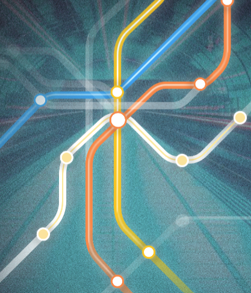

Featured Work
Research & Thought Leadership
Giving researchers a voice — not for the sake of content, but for thought leadership that helps people make better decisions.
Blog · Silverfort
Trick or Scheme: AI Agent Security
What happens when AI agents inherit enterprise identities — and why current frameworks aren't ready.
Read article

Annual Report · Identity Underground
IDU Annual Pulse 2026
The definitive practitioner report on identity threat trends and what defenders are actually seeing in the field.
View report

Video Series · Talks & Panels
Speaking Engagements & Webinars
Curated talks on cybersecurity strategy, identity protection, and the evolving threat landscape.
Watch playlist

Featured Talk
Live: Identity Security Deep Dive
A live-audience deep dive into identity threats, practical defense strategies, and what's coming next.
Watch now